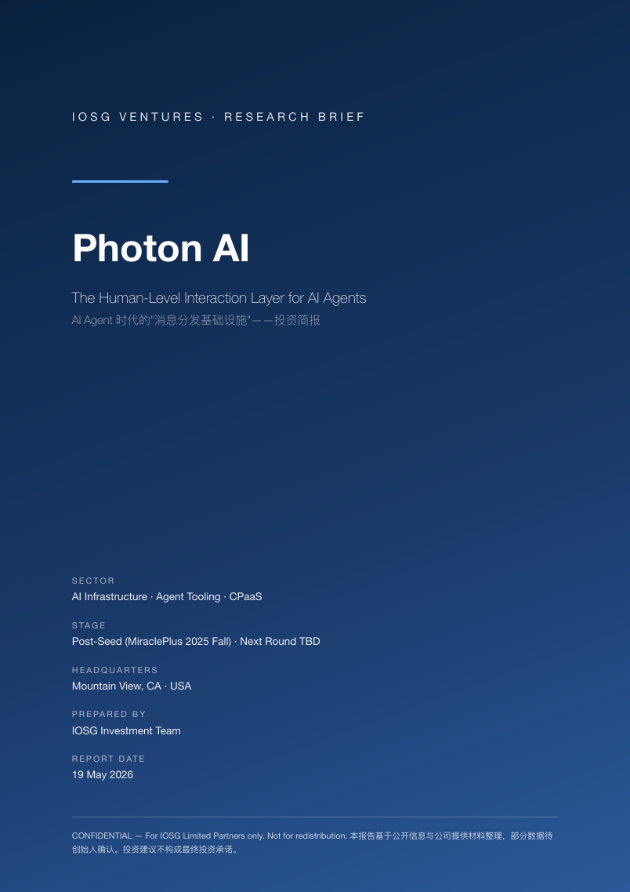
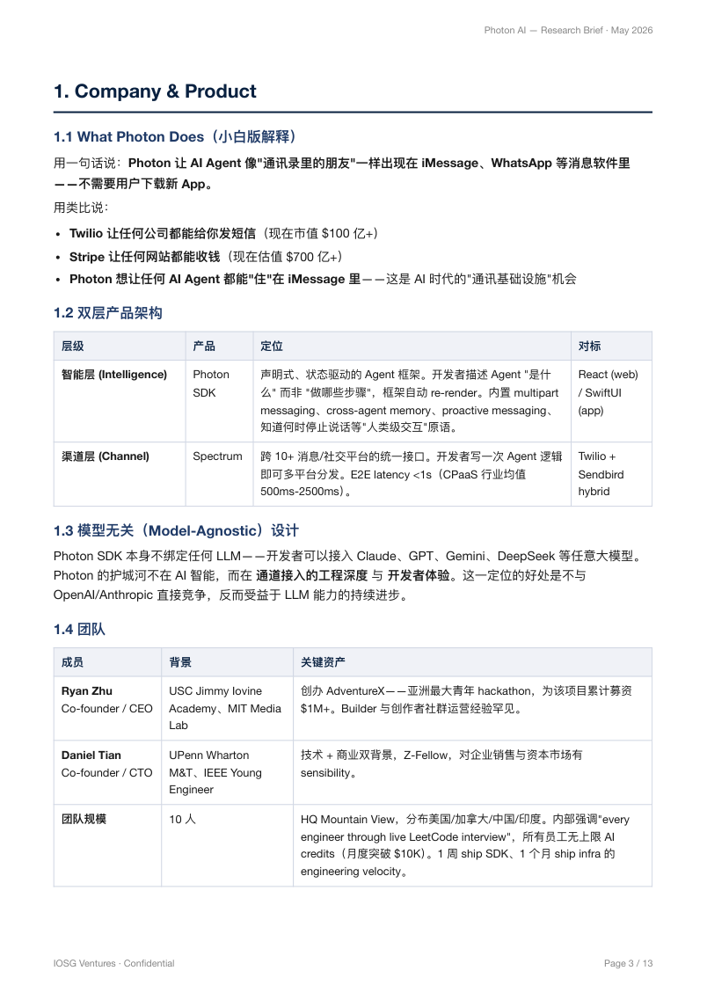
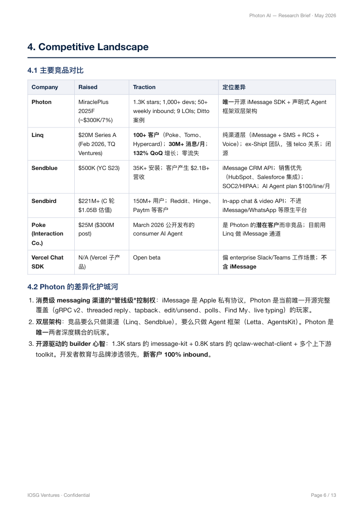

Photon AI
The human-level interaction layer for AI agents: one SDK for deploying agents into iMessage, WhatsApp, Telegram, Slack and other messaging surfaces.

Agent 时代的稀缺资源不是模型智能，而是分发入口。
Photon 押注 AI Agent 的下一代入口会发生在用户已经高频打开的 messaging apps 中。它把渠道层 Spectrum 与声明式 Photon SDK 垂直整合，给 builder 提供“一次写、处处跑”的端到端体验。核心判断：赛道极热，但 Apple / Meta 平台风险被市场低估。
让 AI Agent 像通讯录里的朋友一样出现。
Photon 不是模型公司，而是 agent interaction infrastructure。开发者不需要让用户下载新 App，而是把 agent 直接部署进 iMessage、WhatsApp、Telegram、Slack 等主流消息平台。
Photon SDK
声明式、状态驱动的 Agent 框架。开发者描述 agent 是什么，框架处理 multipart messaging、cross-agent memory、proactive messaging 与“何时停止说话”等交互原语。对标 React / SwiftUI。
Spectrum
跨 10+ 消息与社交平台的统一接口，目标是让 agent logic 一次编写、多平台分发。E2E latency 宣称低于 1 秒，对标 Twilio + Sendbird hybrid。
Model-Agnostic by Design
Photon SDK 不绑定特定 LLM。开发者可接入 Claude、GPT、Gemini、DeepSeek 等模型。护城河不在模型智能，而在通道接入工程深度与开发者体验。
Team Signal
Ryan Zhu 拥有 AdventureX 社群资产与 builder 运营经验；Daniel Tian 具备 Wharton M&T、Z-Fellow 与技术商业复合背景。团队强调 AI-native engineering velocity。
Original Brief Snapshot
产品页原始信息保留为视觉参考，网页正文已按 investment memo 逻辑重新整理。

Messaging 是 Agent 的超级入口。
a16z “dynamic agent layer” thesis 与 Photon 定位同频。若 agent 替代 10-15% consumer-facing app 交互，2030 agent-driven messaging 市场可达 $5-8B。
GPT-4 级别模型后，LLM 已达到在 messaging 中自然交互的临界点，consumer-facing AI agent 在 2025-2026 批量涌现。
开发者厌倦“做 App 再求下载”的低留存模式。用户不会下载 App 见 agent，但每天会打开 iMessage / WhatsApp 上百次。
Apple 与 Meta 收紧 official API，推高逆向工程能力的稀缺溢价，也同步放大平台封禁与合规风险。
开源心智已经建立，商业化还需验证。
Photon 当前最强信号来自开源 flywheel 与 Ditto 案例：GitHub 上唯一开源 iMessage Agent SDK，累计约 2,600+ stars，1,000+ 实际开发者，50+ weekly inbound。
Open Source Flywheel
- imessage-kit: 1,306 stars / 124 forks，首个开源 iMessage Agent SDK。
- advanced-imessage-kit: 覆盖 gRPC v2、threaded reply、tapback、edit / unsend、polls。
- qclaw-wechat-client: 799 stars，WeChat 接入资产被 deck 低估。
- LLM search: iMessage 自动化场景下内容曝光 100K+。
Flagship Customer: Ditto
Ditto 是基于 iMessage 的大学生约会撮合 Agent，覆盖 UC Berkeley、UCSD、USC、UCLA、UC Davis，完全跑在 Spectrum 之上。
- 42,000+ 注册用户
- 140K+ active users
- 4M+ messages processed
- Peak XV 领投 $9.2M seed
Photon 的差异化在“渠道 + 框架”的垂直整合。
Linq 商业领先明显，但主要做渠道层；Sendblue 偏 iMessage CRM API；Sendbird 是成熟 in-app chat API。Photon 的赌注是 SDK 层与开源生态心智会成为 builder 偏好的入口。
| Company | Raised | Traction | Positioning |
|---|---|---|---|
| Photon | MiraclePlus 2025F | 2,600+ stars; 1,000+ devs; 50+ weekly inbound; Ditto case | 唯一开源 iMessage SDK + 声明式 Agent 框架双层架构 |
| Linq | $20M Series A | 100+ customers; 30M+ messages/month; 132% QoQ growth | 纯渠道层，iMessage + SMS + RCS + Voice，闭源，商业领先 |
| Sendblue | $500K YC S23 | 35K+ installs; customers generated $2.1B+ revenue | iMessage CRM API，销售优先，SOC2 / HIPAA |
| Sendbird | $221M+ | 150M+ users; Reddit, Hinge, Paytm | In-app chat & video API，不进入原生 iMessage / WhatsApp |
| Vercel Chat SDK | N/A | Open beta | 偏 enterprise Slack / Teams 工作场景，不含 iMessage |
Competitive Landscape Snapshot
竞品对比的原始 PDF 页面作为 appendix-style visual，便于 LP 快速核对口径。

这是 AI 时代的 Twilio 机会，但不是低风险机会。
Agent 不应困在 dashboard、独立 App 或 Discord bot。主流入口应迁移到用户每天打开的 messaging layer。
“写一次、发到 iMessage”优于拼接 Sendblue + LangChain + 自建 infra。渠道与框架耦合后，体验难被切片复制。
开源到付费漏斗已被 PostHog、Vercel、Supabase 验证。Photon 已获得 iMessage Agent 搜索心智。
从 AppleScript 升级到自研 gRPC v2 server，解锁 threaded reply、tapback、edit / unsend 等一等公民功能。
Ryan 的 AdventureX 与 Daniel 的 Wharton M&T 组合，具备 dev-tool 公司早期 founder-led community 的估值溢价潜力。
WeChat 扩展、crypto agent payment、Asia AI builder ecosystem 是湾区 VC 难提供的差异化价值。
最大风险不是产品，而是平台。
Beeper Mini 的前车之鉴与 Meta WhatsApp chatbot ban 说明：平台方有强动机压制非官方 agent distribution layer。Photon 必须证明它和 Beeper / 通用 chatbot 的风险边界不同。
Beeper Mini 被 Apple 快速封禁。Photon 是 B2B 商业操作，Apple 执行动机可能更强。
Meta 已禁止通用型 AI chatbot 运行在 WhatsApp Business API，削弱多渠道防御故事。
Linq 已有 100+ 客户与 30M+ messages/month，Photon 需要证明 SDK 层能驱动迁移。
团队年轻，企业级 infra、合规、平台关系管理与 senior GTM 需要补强。
LinkedIn $36M annual revenue 与 $100K pipeline 不一致，真实 MRR / ARR 必须澄清。
IOSG 进 cap table 的理由必须不是钱。
自然 lead investor 是 a16z / Spark / General Catalyst。IOSG 的进入理由应绑定湾区 VC 给不了的价值：WeChat、中国 / 亚洲 GTM、crypto payment rail 与 Asia builder ecosystem。
Recommended Role
Strategic Co-investor: $500K-$1M
与湾区 lead investor 共存，用 Asia angle 与 crypto agent payment 集成换取差异化位置。若 co-lead，则需要 Term Sheet 阶段绑定 WeChat KPI、Asia partnership 条款与 board observer。
Three Strategic Hooks
- WeChat SDK 第二增长曲线与 Tencent ecosystem introductions。
- Photon SDK + crypto payment rail，探索 agent 自动结算 default standard。
- Photon House Residency 的 Asia branch sponsor，提前接触下一代 builder。
Discuss / Selective Invest.
在 5 个 Must-Ask 问题得到满意回答后，建议投资。合理本轮估值锚点 $15M-$30M post；若 >$50M post，建议 pass 或等下一轮。
赛道强、timing 强、开源心智强；平台风险必须进入 valuation discount。
按 IOSG framework 介于 Seed A 上限与 Seed B 下限之间。
三者任一触发都应谨慎推进。
IC 前必须问清楚的 5 个问题。
第一次 meeting，带 5 个 Must-Ask 问题与 IOSG WeChat angle。
技术 DD：实际跑通 imessage-kit + Spectrum，验证 latency <1s claim。
财务对标、团队背调、客户访谈，重点验证 Linq / Sendblue 替代意愿。
找 1-2 个 IOSG portfolio 试用 Photon SDK，形成预付客户合同与 IC 决策。